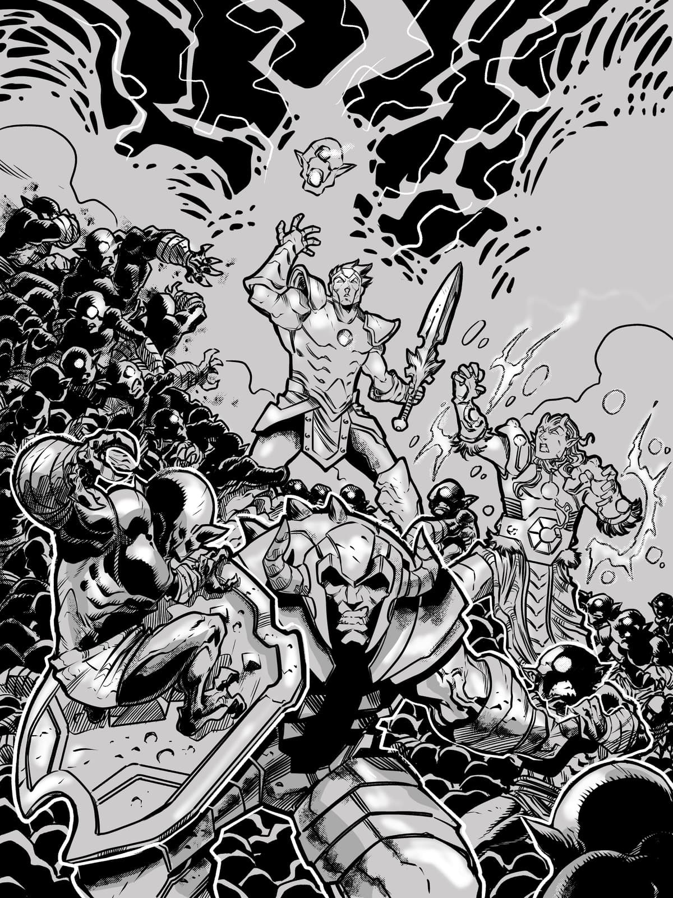
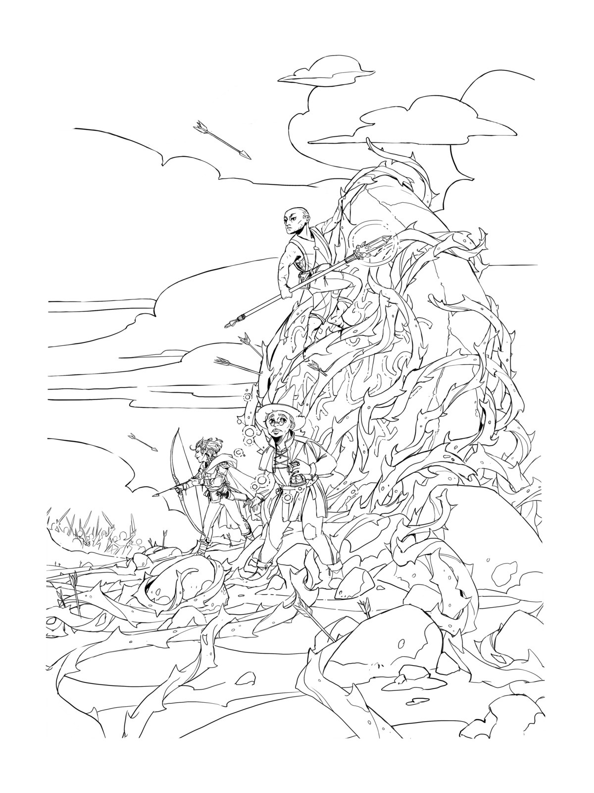

-
What's Role-playing?
Like a board game, a role-playing game is played by sitting around a table with your friends. But, as a role-playing game, A Thousand Faces of Adventure is a little different. It's asymmetrical.
One friend plays the "GM" role and is playing with different rules from the others. The action takes place in a shared, imagined world. It's like collaborative group storytelling. Like a "legacy" board game, the state of the game changes by playing it.
Players change their characters from one session to the next, and the entire fantasy world changes too. The story and challenges are improvised! A Thousand Faces of Adventure lays out a series of milestones and prompts, but you need to play to find out the details of what happens.
-
Is this just like Dungeons & Dragons?
Well... a little bit. Like D&D (and many other role-playing games), the story of the game takes place in a shared, imagined universe limited only by the imaginations of the players. There will also be fantasy combat involving swords and magic.
A Thousand Faces of Adventure is built for creating stories that have, at their core, a structure called "The Hero's Journey". Specific rules cause the characters in the story to cross a threshold into a mysterious, unknown world, where they find a special prize, and then they return to their home as agents of meaningful change.
There are no "adventure modules" or pre-set story though — the challenge for the GM is the challenge of playing jazz: improvising and letting wondrous story details emerge naturally, all the while earning points by keeping to the structure.
Another difference is the physical format. A Thousand Faces of Adventure is played with tokens and cards, with all the necessary information right there on the tabletop, and not encoded on pages in a thick book.
For the players, the challenge is not miniatures-based grid combat, but rather deck-building and managing the economy of XP tokens and mitigating risk by smart uses of "move" cards.
-
How long does it take to play?
There are 3 formats included, a 3-hour (aka "One Shot"), a 9-hour, and a 30-hour campaign.
-
How much does it cost?
The retail cost has yet to be determined. Today, the "playtest" version is available for free. Follow @boardcrafting on Twitter or join discussions on the
/r/RPGdesignsubreddit to get updates about the availability of a retail product. -
How many players are needed?
The game plays best with between 3 and 5 players. One of those players will be the GM, and the rest will play the adventurers of the story.
-
What do I need to play?
The playtest kit available on the Downloads page includes everything you will need to print-and-play at home. Additionally, there is a digital version of the Deckahedron (a deck of 20 cards players need to generate random results) at Togetherness Table. (This tool has many other uses; the Deckahedron is found by clicking the "Cards" button.)
-
Is there an online version?
A Thousand Faces of Adventure is 100% designed to be played with other human beings, ideally in person, but failing that, it can be played with video-conferencing tools and the above-mentioned Togetherness Table.
-
Is the GM playing against the other players?
The GM should be a fan of the characters. But the GM is not a "god" of the shared, imagined universe of the game. The GM cannot just "do anything". In A Thousand Faces of Adventure, the GM is another player following rules, but their rules are different from the others.
During play, GMs collect points, "Journey Points" and "Shadow Points". With Shadow Points, a GM can increase the difficulty of the challenges the other players face. With Journey Points, the GM can "break" or "bend" certain other rules of the game, even perform "miracles", like bringing dead characters back to life.
